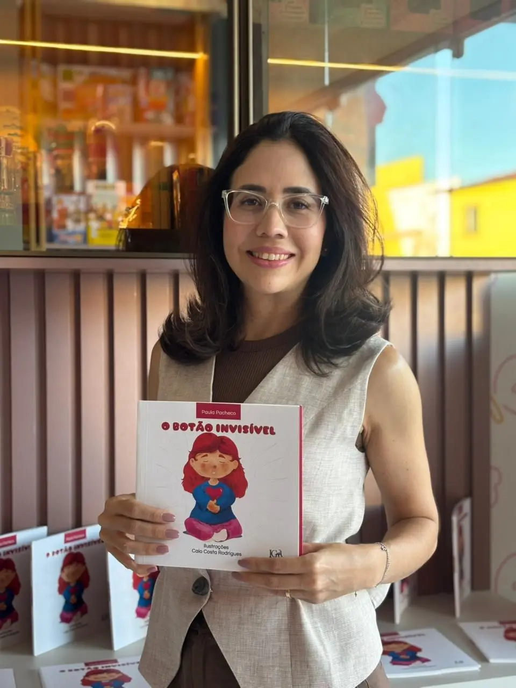
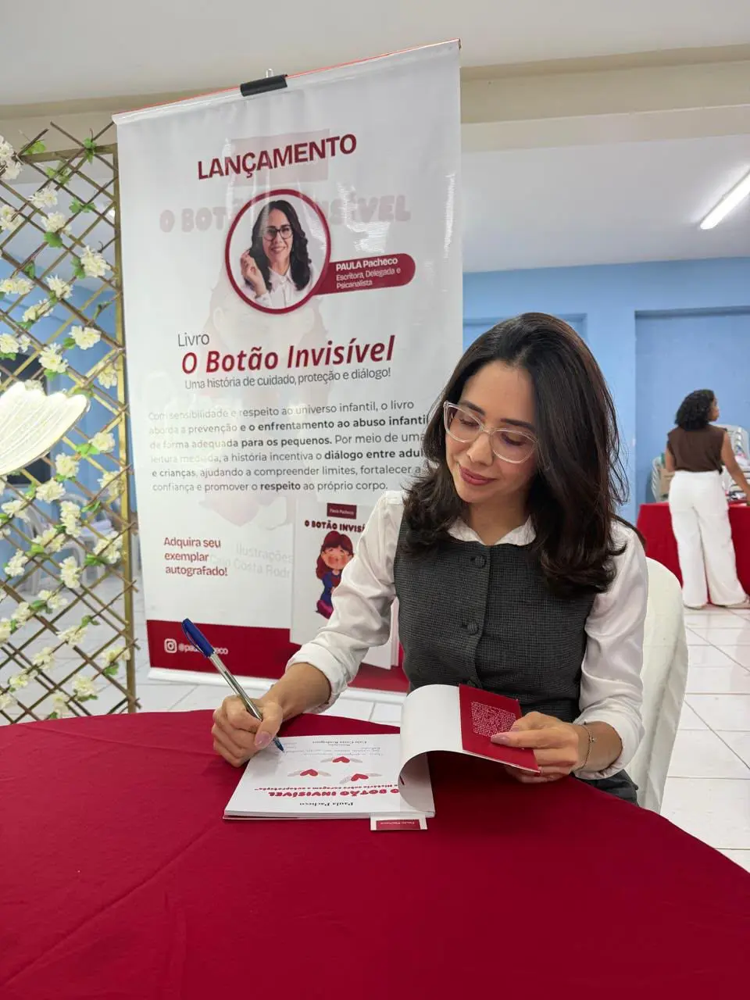
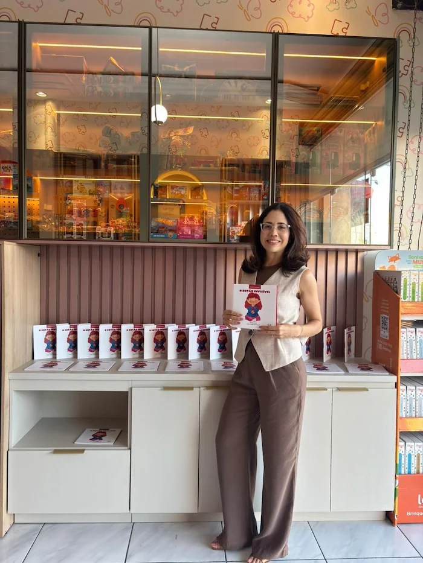
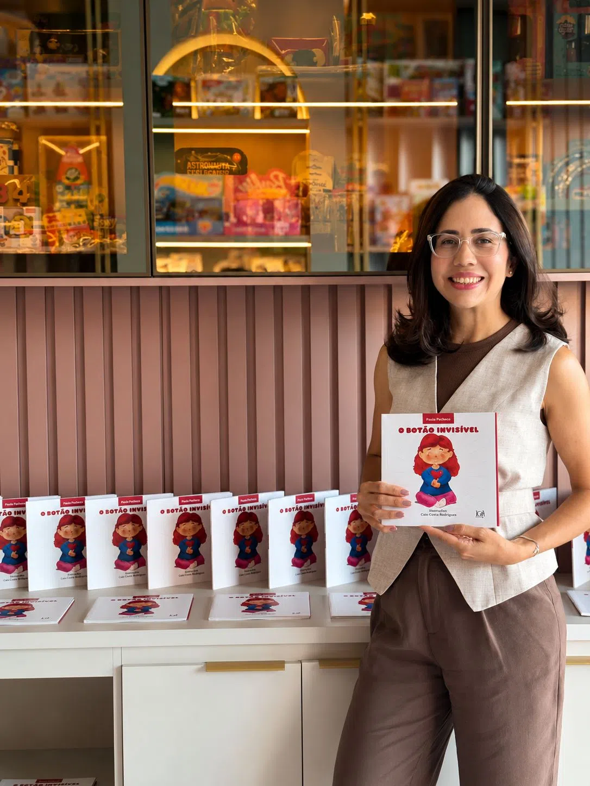
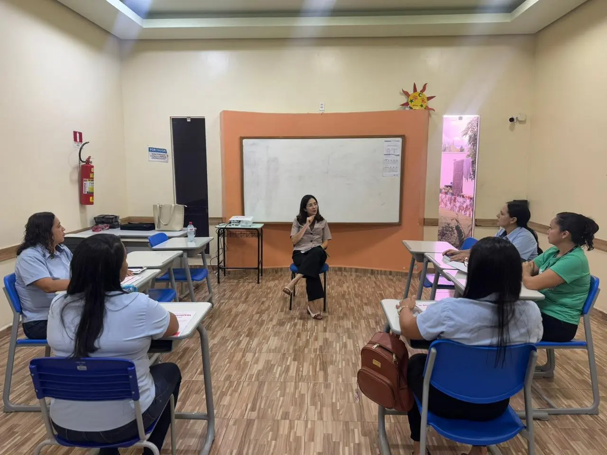
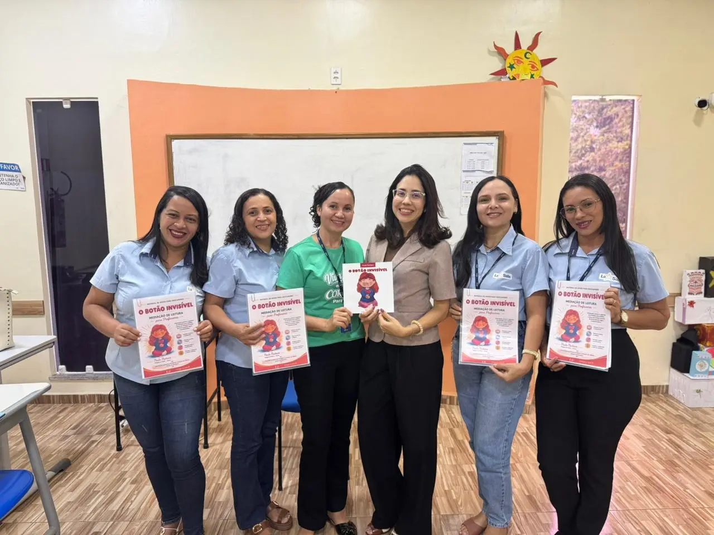

É fortalecer sua segurança.
O Botão Invisível
Um livro para proteger. Uma ferramenta para educar. Um projeto para transformar.
Quero adquirir meu livro
Como surgiu o Botão Invisível?
Ao longo da experiência profissional da autora na proteção de crianças e adolescentes, tornou-se evidente que muitas situações de violência poderiam ser prevenidas se as crianças recebessem orientação adequada desde cedo e se os adultos estivessem preparados para abordar esses temas com naturalidade e segurança.
Foi dessa percepção que nasceu o Botão Invisível.
A proposta é utilizar a literatura infantil como uma ponte entre adultos e crianças, transformando um tema delicado em uma conversa possível, respeitosa e educativa.
Quero adquirir meu livroPara quem é o livro?
Famílias
Pais, mães e responsáveis que desejam ensinar seus filhos sobre proteção, autocuidado e respeito ao próprio corpo de forma adequada à idade.
Escolas
Instituições de ensino que desejam desenvolver ações preventivas, projetos pedagógicos e momentos de conscientização junto aos alunos, professores e famílias.
Igrejas
Comunidades que compreendem a importância de fortalecer a proteção da infância e desejam oferecer orientação segura às famílias.
Projetos Sociais
Organizações, associações e iniciativas voltadas ao cuidado e desenvolvimento de crianças e adolescentes.
O que o projeto pode oferecer?
- Livro infantil Botão Invisível;
- Palestras para pais e responsáveis;
- Formação para professores e equipes escolares;
- Conversas e rodas de diálogo sobre proteção da infância;
- Participação em eventos educacionais;
- Projetos de conscientização para escolas, igrejas e instituições;
- Parcerias com órgãos públicos e entidades privadas.


O que educadores dizem sobre o projeto?
Neste espaço você poderá conhecer a experiência de profissionais da educação que participaram de momentos formativos e conheceram a proposta do Botão Invisível.
Leve "O Botão Invisível" para sua instituição
O projeto está aberto a parcerias como:
- Escolar Públicas;
- Secretarias de Educação;
- Igrejas e Comunidades religiosas;
- Projetos Sociais;
- Empresas e instituições interessadas em apoiar ações de proteção à infância.
Se você deseja levar o Botão Invisível para sua escola, igreja, município ou organização, entre em contato.



Juntos pela proteção da infância!
É criar espaços de confiança para que elas saibam que nunca estarão sozinhas.
É ensinar que seu corpo merece respeito.
O Botão Invisível nasceu com esse propósito: contribuir para que mais crianças cresçam protegidas, informadas e cercadas de adultos preparados para cuidar delas.
Entre em contato para conhecer o projeto ou construir uma parceria.
Quero aderir ao projeto!